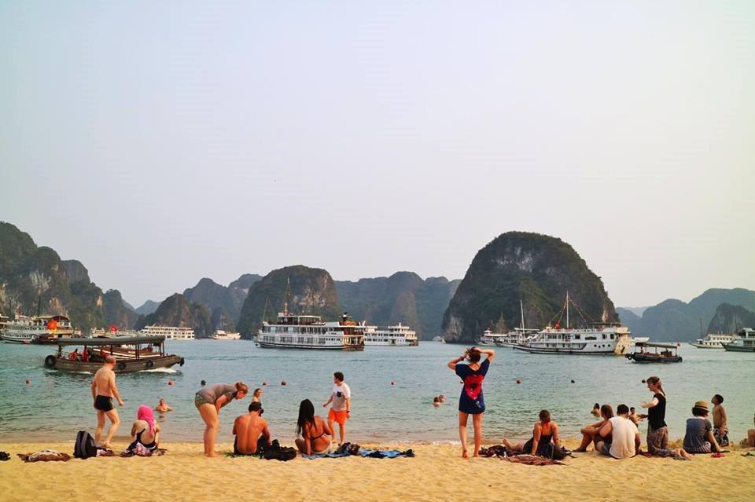
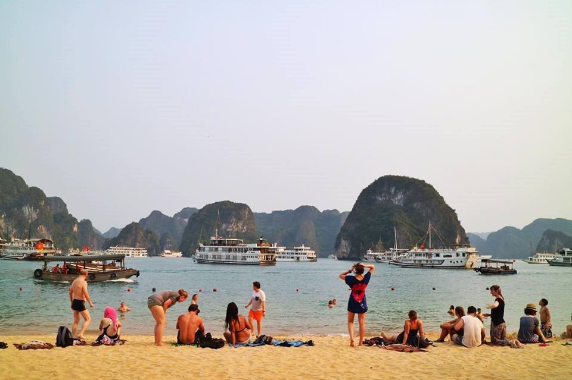
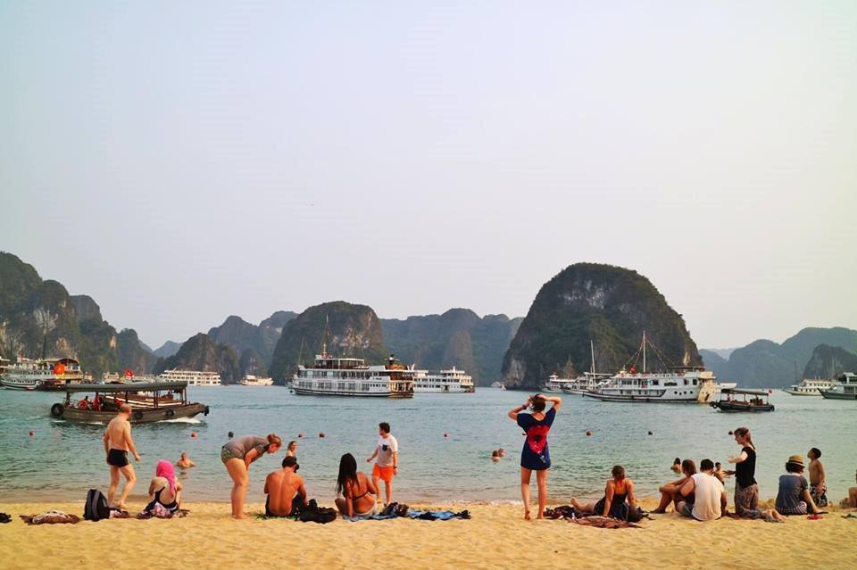

La baie Halong est l’une des merveilles naturelles les plus incroyables de Mère Nature, et l’un des trésors les plus
prisés du Vietnam. À 3,5 petites heures de route d’Hanoï, la baie d’Halong est située au nord-est du Vietnam, sur les
rives du golfe du Tonkin.
Sa beauté pittoresque, son importance archéologique et géologique, ses liens culturels et historiques, ses fruits de mer
frais et sa proximité à des accès internationaux font de la baie d’Halong l’un des lieux les plus populaires du Vietnam.
Sa beauté est telle, qu’en 1994 l’UNESCO a reconnu le cœur de la baie d’Halong comme faisant partie du patrimoine
mondial naturel, et a déclaré que « Outre la baie d’Halong, il n’existe aucun site équivalent sur la liste du patrimoine
mondial… ».

Hanoï, en tant que capitale du Vietnam, est aussi un centre politique, culturel et touristique. Située sur les rives de la rivière Rouge dans le nord du Vietnam, à 1760 kilomètres de HoChiMinh-ville, Hanoi a une longue et passionnante histoire. Du haut de ses 1000 ans, fêté en octobre 2010, c’est la capitale la plus ancienne.Cette ville possède de nombreuses œuvres culturelles et architecturales ainsi que des sites historiques célèbres. Elle attire grand nombre de touristes étrangers par sa beauté pittoresque et son calme. Celle-ci possède une élégance discrète façonnée par des milliers d'années de civilisation.